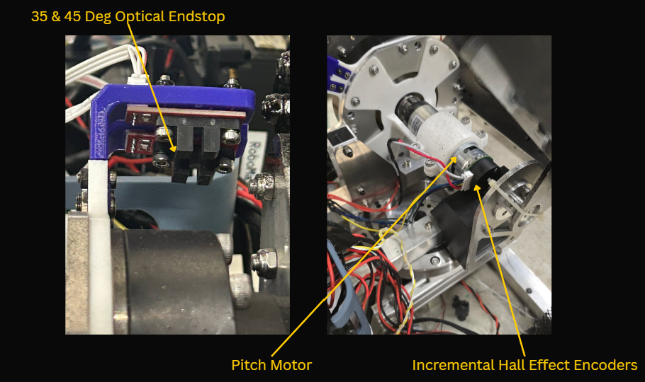
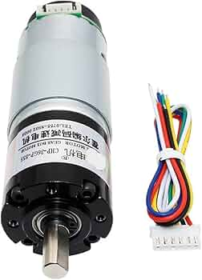
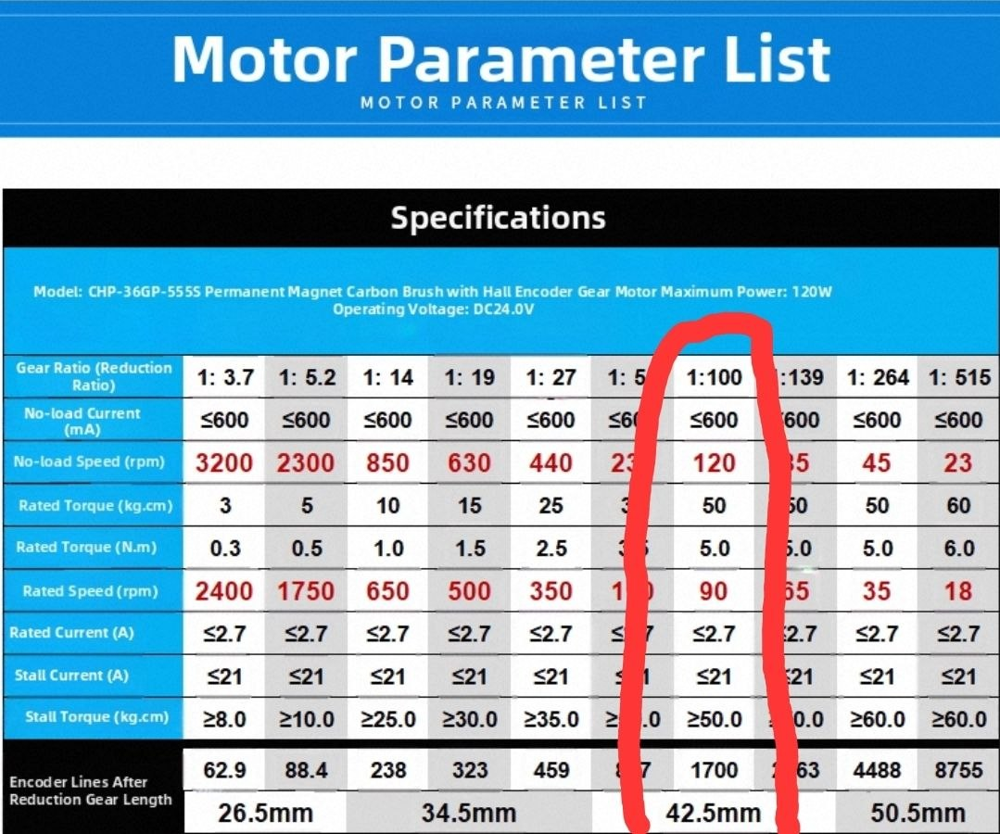
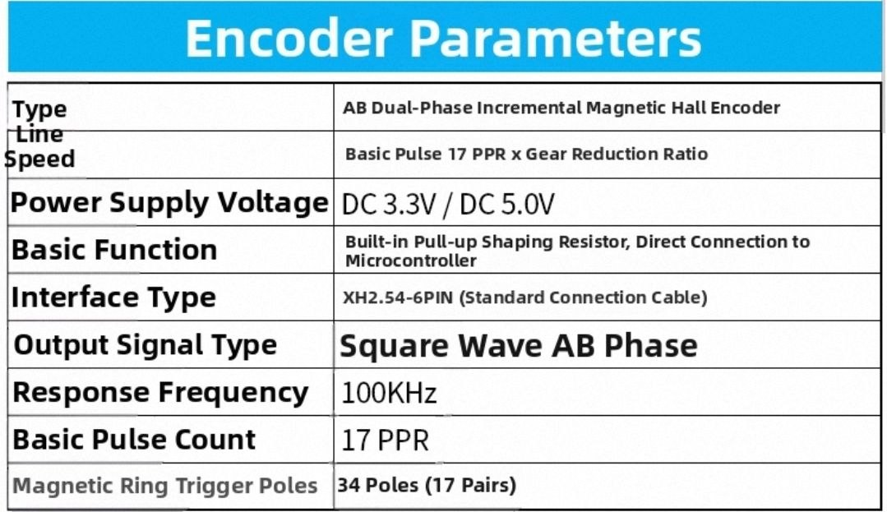

Angular envelope
The commanded pitch angle must stay within 35° to 45°, providing a 10° operating span that meets the competition requirement.
Controlling elevation with precision, the pitch electronics keep launcher motion sharp, stable, and reliable. The design emphasizes strict operational limits, high-resolution position tracking, and responsive operator interaction to coordinate accurate vertical target acquisition.

Y4 EE
The comprehensive V-shaped system methodology used for this subsystem is detailed in the Yaw Electronics section.
The commanded pitch angle must stay within 35° to 45°, providing a 10° operating span that meets the competition requirement.
Feedback must resolve small pitch changes so aim adjustments on the order of a fraction of a degree remain meaningful after gear reduction.
After homing, the quadrature counter must be referenced to 35° so all setpoints lie in a consistent frame.
The measured pitch angle must accurately reflect the actual mechanism angle, with deviation limited to the specified tolerance.

Pitch Motor
Brushed DC motor with Hall effect AB encoder
The pitch axis is driven by a brushed DC motor fitted with a Hall effect AB quadrature encoder. As stated in the Pitch Subsystem Design, the motor was chosen to meet the required mechanical torque while remaining within the intended price point. The encoder's two-channel output feeds the STM32's timer peripheral in encoder mode, providing high-resolution angular feedback for closed-loop position control across the 35°–45° operating span without a separate encoder assembly.



Homing Sensors
Limit Switch vs Optical Endstop
The pitch mechanism requires reliable angular feedback for closed-loop position control and safe operation within its commanded range. An incremental encoder was used to measure relative motion of the pitch axis and provide continuous feedback during operation. This supports accurate and repeatable positioning, but the system must first establish a reference position at startup since the encoder does not report absolute angle directly.


| Aspect | Mechanical limit switch | Optical endstop |
|---|---|---|
| Sensing principle | Physical contact on roller/lever closes/opens contacts | Carriage tab breaks an infrared beam in the slot |
| Load on mechanism | Requires force to deflect lever; can add friction or shock if misaligned | No contact force; only occlusion of the beam |
| Wear & lifetime | Roller, spring, and electrical contacts wear with cycles | No mechanical wear; limited by LED/phototransistor life and cleanliness |
| Bounce & signal | Contact bounce → needs firmware debounce and can smear edge timing | Typically clean logic transition; minimal debounce |
| Repeatability | Depends on approach speed, overtravel, and lever hysteresis | Sharp break/make when slot is covered; stable with fixed flag geometry |
| Environmental risks | Dust can abrade roller; moisture may affect contacts (sealed types help) | Dust or debris in slot or stray light can affect reading → shield and keep slot clear |
| Integration | Three terminals (C / NO / NC); simple pull-up to one digital input | Three wires (VCC / GND / OUT); same MCU GPIO class as a switch |
Why the optical endstop was chosen over a limit switch
For the pitch mechanism, the reference position must be detected with good repeatability so that the encoder can be zeroed consistently during homing. The optical endstop was chosen over a mechanical limit switch because it provides non-contact sensing, which removes lever wear, mechanical hysteresis, and contact bounce. This gives a cleaner and more repeatable trigger point, improving the consistency of the homing process and the accuracy of the resulting pitch angle reference. The trade-off is that the optical sensor must be protected from dust and misalignment, but this was accepted because the improved repeatability was more important for this application.
Automatic quadrature decoding is implemented using the built-in hardware timer encoder mode of the STM32F4 microcontroller, rather than software interrupts. This reduces the risk of missed pulses and counting errors during motor operation.
During initialisation, the pitch motor is driven in the downward direction until the optical endstop is triggered. Upon detection of the endstop, the firmware resets the hardware timer count to 0, thereby defining the reference position. The pitch angle is then determined using the relation 35° + (hardware timer count × 0.00106°).
Testing results are documented in the Pitch Design section.